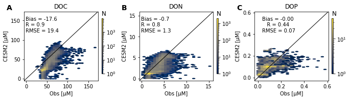
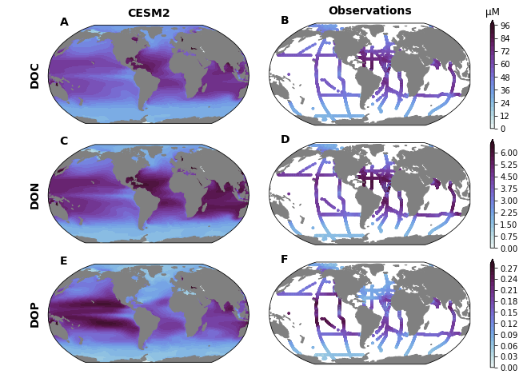

%load_ext autoreload
%autoreload 2
import os
from itertools import product
import pandas as pd
import numpy as np
import xarray as xr
import matplotlib.pyplot as plt
import matplotlib.gridspec as gridspec
import matplotlib.colors as colors
import cmocean
import cartopy
import cartopy.crs as ccrs
import xpersist as xp
cache_dir = '/glade/p/cgd/oce/projects/cesm2-marbl/xpersist_cache/3d_fields'
if (os.path.isdir(cache_dir)):
xp.settings['cache_dir'] = cache_dir
os.makedirs(cache_dir, exist_ok=True)
os.environ['CESMDATAROOT'] = '/glade/scratch/mclong/inputdata'
import pop_tools
import utils
import discrete_obs
import plot
import data_collections
cluster, client = utils.get_ClusterClient()
cluster.scale(12) #adapt(minimum_jobs=0, maximum_jobs=24)
client
/glade/work/mclong/miniconda3/envs/cesm2-marbl/lib/python3.7/site-packages/distributed/dashboard/core.py:79: UserWarning:
Port 8787 is already in use.
Perhaps you already have a cluster running?
Hosting the diagnostics dashboard on a random port instead.
warnings.warn("\n" + msg)
Client
|
Cluster
|
ds_grid = pop_tools.get_grid('POP_gx1v7')
masked_area = ds_grid.TAREA.where(ds_grid.REGION_MASK > 0).fillna(0.).expand_dims('region')
masked_area.plot()
/glade/work/mclong/miniconda3/envs/cesm2-marbl/lib/python3.7/site-packages/numba/np/ufunc/parallel.py:365: NumbaWarning: The TBB threading layer requires TBB version 2019.5 or later i.e., TBB_INTERFACE_VERSION >= 11005. Found TBB_INTERFACE_VERSION = 6103. The TBB threading layer is disabled.
warnings.warn(problem)
<matplotlib.collections.QuadMesh at 0x2b9e938bced0>

nmolcm3_to_µM = 1.
varlist = [
'DOC',
'DOCr',
'DOCt',
'DON',
'DONr',
'DONt',
'DOP',
'DOPr',
'DOPt',
]
coll = data_collections.epoch_mean(
query=dict(experiment='historical', stream='pop.h'),
)
dsets = coll.to_dataset_dict(varlist, clobber=False)
_, ds = dsets.popitem()
with xr.set_options(keep_attrs=True):
ds = ds.mean('member_id')
for v in varlist:
if ds[v].attrs['units'] == 'mmol/m^3':
ds[v].attrs['units'] = 'µM'
dsp = utils.pop_add_cyclic(ds)
dsp.info()
--> The keys in the returned dictionary of datasets are constructed as follows:
'component.experiment.stream'
100.00% [1/1 00:00<00:00]
--> The keys in the returned dictionary of datasets are constructed as follows:
'component.experiment.stream'
100.00% [1/1 00:00<00:00]
/glade/work/mclong/miniconda3/envs/cesm2-marbl/lib/python3.7/site-packages/intake_esm/search.py:107: UserWarning: Query returned zero results.
warn(message)
--> The keys in the returned dictionary of datasets are constructed as follows:
'component.experiment.stream'
100.00% [1/1 00:00<00:00]
--> The keys in the returned dictionary of datasets are constructed as follows:
'component.experiment.stream'
100.00% [1/1 00:00<00:00]
--> The keys in the returned dictionary of datasets are constructed as follows:
'component.experiment.stream'
100.00% [1/1 00:00<00:00]
/glade/work/mclong/miniconda3/envs/cesm2-marbl/lib/python3.7/site-packages/intake_esm/search.py:107: UserWarning: Query returned zero results.
warn(message)
--> The keys in the returned dictionary of datasets are constructed as follows:
'component.experiment.stream'
100.00% [1/1 00:00<00:00]
--> The keys in the returned dictionary of datasets are constructed as follows:
'component.experiment.stream'
100.00% [1/1 00:00<00:00]
--> The keys in the returned dictionary of datasets are constructed as follows:
'component.experiment.stream'
100.00% [1/1 00:00<00:00]
/glade/work/mclong/miniconda3/envs/cesm2-marbl/lib/python3.7/site-packages/intake_esm/search.py:107: UserWarning: Query returned zero results.
warn(message)
--> The keys in the returned dictionary of datasets are constructed as follows:
'component.experiment.stream'
100.00% [1/1 00:00<00:00]
xarray.Dataset {
dimensions:
lat_aux_grid = 395 ;
moc_z = 61 ;
nlat = 384 ;
nlon = 321 ;
z_t = 60 ;
z_t_150m = 15 ;
z_w = 60 ;
z_w_bot = 60 ;
z_w_top = 60 ;
variables:
float32 z_t(z_t) ;
z_t:long_name = depth from surface to midpoint of layer ;
z_t:units = centimeters ;
z_t:positive = down ;
z_t:valid_min = 500.0 ;
z_t:valid_max = 537500.0 ;
float64 TLAT(nlat, nlon) ;
float64 TLONG(nlat, nlon) ;
float64 DOC(z_t, nlat, nlon) ;
DOC:long_name = Dissolved Organic Carbon ;
DOC:units = µM ;
DOC:grid_loc = 3111 ;
DOC:cell_methods = time: mean ;
float64 HTE(nlat, nlon) ;
HTE:long_name = cell widths on East sides of T cell ;
HTE:units = centimeters ;
float64 DXT(nlat, nlon) ;
DXT:long_name = x-spacing centered at T points ;
DXT:units = centimeters ;
float64 T0_Kelvin() ;
T0_Kelvin:long_name = Zero Point for Celsius ;
T0_Kelvin:units = degK ;
float64 salt_to_ppt() ;
salt_to_ppt:long_name = Convert Salt in gram/gram to g/kg ;
float64 heat_to_PW() ;
heat_to_PW:long_name = Convert Heat Flux to Petawatts ;
float64 ANGLET(nlat, nlon) ;
ANGLET:long_name = angle grid makes with latitude line on T grid ;
ANGLET:units = radians ;
float64 KMU(nlat, nlon) ;
KMU:long_name = k Index of Deepest Grid Cell on U Grid ;
float64 HUW(nlat, nlon) ;
HUW:long_name = cell widths on West sides of U cell ;
HUW:units = centimeters ;
float64 fwflux_factor() ;
fwflux_factor:long_name = Convert Net Fresh Water Flux to Salt Flux (in model units) ;
float64 ocn_ref_salinity() ;
ocn_ref_salinity:long_name = Ocean Reference Salinity ;
ocn_ref_salinity:units = g/kg ;
float64 salt_to_mmday() ;
salt_to_mmday:long_name = Convert Salt to Water (millimeters/day) ;
float64 rho_air() ;
rho_air:long_name = Ambient Air Density ;
rho_air:units = kg/m^3 ;
float64 momentum_factor() ;
momentum_factor:long_name = Convert Windstress to Velocity Flux ;
float64 nsurface_t() ;
nsurface_t:long_name = Number of Ocean T Points at Surface ;
float64 DYT(nlat, nlon) ;
DYT:long_name = y-spacing centered at T points ;
DYT:units = centimeters ;
float64 grav() ;
grav:long_name = Acceleration Due to Gravity ;
grav:units = centimeter/s^2 ;
float64 KMT(nlat, nlon) ;
KMT:long_name = k Index of Deepest Grid Cell on T Grid ;
float64 radius() ;
radius:long_name = Earths Radius ;
radius:units = centimeters ;
float64 latent_heat_fusion_mks() ;
latent_heat_fusion_mks:long_name = Latent Heat of Fusion ;
latent_heat_fusion_mks:units = J/kg ;
float64 REGION_MASK(nlat, nlon) ;
REGION_MASK:long_name = basin index number (signed integers) ;
float64 cp_sw() ;
cp_sw:long_name = Specific Heat of Sea Water ;
cp_sw:units = erg/g/K ;
float64 salinity_factor() ;
float64 rho_fw() ;
rho_fw:long_name = Density of Fresh Water ;
rho_fw:units = gram/centimeter^3 ;
float32 z_w(z_w) ;
z_w:long_name = depth from surface to top of layer ;
z_w:units = centimeters ;
z_w:positive = down ;
z_w:valid_min = 0.0 ;
z_w:valid_max = 525000.9375 ;
float32 dzw(z_w) ;
dzw:long_name = midpoint of k to midpoint of k+1 ;
dzw:units = centimeters ;
float32 dz(z_t) ;
dz:long_name = thickness of layer k ;
dz:units = centimeters ;
float64 hflux_factor() ;
hflux_factor:long_name = Convert Heat and Solar Flux to Temperature Flux ;
float64 stefan_boltzmann() ;
stefan_boltzmann:long_name = Stefan-Boltzmann Constant ;
stefan_boltzmann:units = watt/m^2/degK^4 ;
float64 sound() ;
sound:long_name = Speed of Sound ;
sound:units = centimeter/s ;
float64 latent_heat_fusion() ;
latent_heat_fusion:long_name = Latent Heat of Fusion ;
latent_heat_fusion:units = erg/g ;
float64 nsurface_u() ;
nsurface_u:long_name = Number of Ocean U Points at Surface ;
float64 vonkar() ;
vonkar:long_name = von Karman Constant ;
float64 rho_sw() ;
rho_sw:long_name = Density of Sea Water ;
rho_sw:units = gram/centimeter^3 ;
float64 TAREA(nlat, nlon) ;
TAREA:long_name = area of T cells ;
TAREA:units = centimeter^2 ;
float64 HT(nlat, nlon) ;
HT:long_name = ocean depth at T points ;
HT:units = centimeter ;
float64 HU(nlat, nlon) ;
HU:long_name = ocean depth at U points ;
HU:units = centimeter ;
float64 mass_to_Sv() ;
mass_to_Sv:long_name = Convert Mass Flux to Sverdrups ;
float64 ppt_to_salt() ;
ppt_to_salt:long_name = Convert Salt in g/kg to gram/gram ;
float64 sflux_factor() ;
sflux_factor:long_name = Convert Salt Flux to Salt Flux (in model units) ;
timedelta64[ns] days_in_norm_year() ;
days_in_norm_year:long_name = Calendar Length ;
float64 omega() ;
omega:long_name = Earths Angular Velocity ;
omega:units = 1/second ;
float64 cp_air() ;
cp_air:long_name = Heat Capacity of Air ;
cp_air:units = joule/kg/degK ;
float64 ANGLE(nlat, nlon) ;
ANGLE:long_name = angle grid makes with latitude line ;
ANGLE:units = radians ;
float64 salt_to_Svppt() ;
salt_to_Svppt:long_name = Convert Salt Flux to Sverdrups*g/kg ;
float64 DYU(nlat, nlon) ;
DYU:long_name = y-spacing centered at U points ;
DYU:units = centimeters ;
float64 HTN(nlat, nlon) ;
HTN:long_name = cell widths on North sides of T cell ;
HTN:units = centimeters ;
float64 UAREA(nlat, nlon) ;
UAREA:long_name = area of U cells ;
UAREA:units = centimeter^2 ;
float64 DXU(nlat, nlon) ;
DXU:long_name = x-spacing centered at U points ;
DXU:units = centimeters ;
float64 HUS(nlat, nlon) ;
HUS:long_name = cell widths on South sides of U cell ;
HUS:units = centimeters ;
float64 sea_ice_salinity() ;
sea_ice_salinity:long_name = Salinity of Sea Ice ;
sea_ice_salinity:units = g/kg ;
float64 latent_heat_vapor() ;
latent_heat_vapor:long_name = Latent Heat of Vaporization ;
latent_heat_vapor:units = J/kg ;
float64 DOCr(z_t, nlat, nlon) ;
DOCr:long_name = Refractory DOC ;
DOCr:units = µM ;
DOCr:grid_loc = 3111 ;
DOCr:cell_methods = time: mean ;
float64 DOCt(z_t, nlat, nlon) ;
DOCt:long_name = Dissolved Organic Carbon (total) ;
DOCt:units = µM ;
DOCt:grid_loc = 3111 ;
DOCt:cell_methods = time: mean ;
float64 DON(z_t, nlat, nlon) ;
DON:long_name = Dissolved Organic Nitrogen ;
DON:units = µM ;
DON:grid_loc = 3111 ;
DON:cell_methods = time: mean ;
float64 DONr(z_t, nlat, nlon) ;
DONr:long_name = Refractory DON ;
DONr:units = µM ;
DONr:grid_loc = 3111 ;
DONr:cell_methods = time: mean ;
float64 DONt(z_t, nlat, nlon) ;
DONt:long_name = Dissolved Organic Nitrogen (total) ;
DONt:units = µM ;
DONt:grid_loc = 3111 ;
DONt:cell_methods = time: mean ;
float64 DOP(z_t, nlat, nlon) ;
DOP:long_name = Dissolved Organic Phosphorus ;
DOP:units = µM ;
DOP:grid_loc = 3111 ;
DOP:cell_methods = time: mean ;
float64 DOPr(z_t, nlat, nlon) ;
DOPr:long_name = Refractory DOP ;
DOPr:units = µM ;
DOPr:grid_loc = 3111 ;
DOPr:cell_methods = time: mean ;
float64 DOPt(z_t, nlat, nlon) ;
DOPt:long_name = Dissolved Organic Phosphorus (total) ;
DOPt:units = µM ;
DOPt:grid_loc = 3111 ;
DOPt:cell_methods = time: mean ;
float32 moc_z(moc_z) ;
moc_z:long_name = depth from surface to top of layer ;
moc_z:units = centimeters ;
moc_z:positive = down ;
moc_z:valid_min = 0.0 ;
moc_z:valid_max = 549999.0625 ;
float32 z_w_top(z_w_top) ;
z_w_top:long_name = depth from surface to top of layer ;
z_w_top:units = centimeters ;
z_w_top:positive = down ;
z_w_top:valid_min = 0.0 ;
z_w_top:valid_max = 525000.9375 ;
float32 z_w_bot(z_w_bot) ;
z_w_bot:long_name = depth from surface to bottom of layer ;
z_w_bot:units = centimeters ;
z_w_bot:positive = down ;
z_w_bot:valid_min = 1000.0 ;
z_w_bot:valid_max = 549999.0625 ;
float32 z_t_150m(z_t_150m) ;
z_t_150m:long_name = depth from surface to midpoint of layer ;
z_t_150m:units = centimeters ;
z_t_150m:positive = down ;
z_t_150m:valid_min = 500.0 ;
z_t_150m:valid_max = 14500.0 ;
float32 lat_aux_grid(lat_aux_grid) ;
lat_aux_grid:long_name = latitude grid for transport diagnostics ;
lat_aux_grid:units = degrees_north ;
lat_aux_grid:valid_min = -79.48815155029297 ;
lat_aux_grid:valid_max = 90.0 ;
// global attributes:
}
client.close()
cluster.close()
del client
del cluster
%%time
df = discrete_obs.open_datastream('DOM')
df = df.loc[df.month != 0]
for v in ['DONt', 'DOPt', 'DOCt']:
df.obs_stream.add_model_field(ds[v], field_name=v)
df.obs_stream.add_model_field(ds_grid.REGION_MASK, method='nearest')
df
CPU times: user 32.1 s, sys: 101 ms, total: 32.2 s
Wall time: 33.5 s
| month | lon | lat | depth | DONt_obs | DOPt_obs | DOCt_obs | DONt | DOPt | DOCt | REGION_MASK | |
|---|---|---|---|---|---|---|---|---|---|---|---|
| 0 | 3 | -49.30228 | -35.08802 | 11.9 | 3.05 | 0.015 | NaN | 4.268617 | 0.157754 | 56.280749 | 1.0 |
| 1 | 3 | -49.30228 | -35.08802 | 28.3 | 5.14 | 0.132 | NaN | 4.265461 | 0.157699 | 56.246864 | 1.0 |
| 2 | 3 | -49.30228 | -35.08802 | 41.7 | 4.19 | 0.120 | NaN | 4.251975 | 0.157330 | 56.101877 | 1.0 |
| 3 | 3 | -49.30228 | -35.08802 | 45.1 | 4.79 | 0.118 | NaN | 4.246521 | 0.157168 | 56.043348 | 1.0 |
| 4 | 3 | -49.30228 | -35.08802 | 49.6 | 3.51 | NaN | NaN | 4.227620 | 0.156552 | 55.842015 | 1.0 |
| ... | ... | ... | ... | ... | ... | ... | ... | ... | ... | ... | ... |
| 73407 | 2 | -71.70450 | -32.50090 | 436.0 | NaN | NaN | 44.3825 | 0.812257 | 0.015592 | 15.307975 | 2.0 |
| 73408 | 2 | -71.70450 | -32.50090 | 484.3 | NaN | NaN | NaN | 0.803211 | 0.015143 | 15.239654 | 2.0 |
| 73409 | 2 | -71.70450 | -32.50090 | 565.7 | NaN | NaN | 54.9400 | 0.792619 | 0.014655 | 15.183139 | 2.0 |
| 73410 | 2 | -71.70450 | -32.50090 | 663.2 | NaN | NaN | NaN | 0.783126 | 0.014250 | 15.153217 | 2.0 |
| 73411 | 2 | -71.70450 | -32.50090 | 723.1 | NaN | NaN | 50.4300 | 0.778165 | 0.014049 | 15.142993 | 2.0 |
73412 rows × 11 columns
mask3d = pop_tools.region_mask_3d('POP_gx1v7', mask_name='default')
mask3d.region
<xarray.DataArray 'region' (region: 13)>
array(['Black Sea', 'Baltic Sea', 'Red Sea', 'Southern Ocean', 'Pacific Ocean',
'Indian Ocean', 'Persian Gulf', 'Atlantic Ocean', 'Mediterranean Sea',
'Lab. Sea & Baffin Bay', 'GIN Seas', 'Arctic Ocean', 'Hudson Bay'],
dtype='<U21')
Coordinates:
* region (region) <U21 'Black Sea' 'Baltic Sea' ... 'Hudson Bay'xarray.DataArray
'region'
- region: 13
- 'Black Sea' 'Baltic Sea' 'Red Sea' ... 'Arctic Ocean' 'Hudson Bay'
array(['Black Sea', 'Baltic Sea', 'Red Sea', 'Southern Ocean', 'Pacific Ocean', 'Indian Ocean', 'Persian Gulf', 'Atlantic Ocean', 'Mediterranean Sea', 'Lab. Sea & Baffin Bay', 'GIN Seas', 'Arctic Ocean', 'Hudson Bay'], dtype='<U21') - region(region)<U21'Black Sea' ... 'Hudson Bay'
array(['Black Sea', 'Baltic Sea', 'Red Sea', 'Southern Ocean', 'Pacific Ocean', 'Indian Ocean', 'Persian Gulf', 'Atlantic Ocean', 'Mediterranean Sea', 'Lab. Sea & Baffin Bay', 'GIN Seas', 'Arctic Ocean', 'Hudson Bay'], dtype='<U21')
from mpl_toolkits.axes_grid1.inset_locator import inset_axes
fig = plt.figure(figsize=(12, 2.5))
nrow, ncol = 1, 3
gs = gridspec.GridSpec(
nrows=10, ncols=ncol*3,
width_ratios=(1, 0.02, 0.4,)*ncol,
wspace=0.1,
hspace=0.0,
)
axs = np.empty((nrow, ncol)).astype(object)
for i, j in product(range(nrow), range(ncol)):
axs[i, j] = plt.subplot(gs[:, j*3])
depth_range = (0., 100000.)
for n, field in enumerate(['DOCt', 'DONt', 'DOPt']):
ax = axs[0, n]
df_sub = df.loc[(depth_range[0] <= df.depth) & (df.depth <= depth_range[1])]
xobs, ymodel = df_sub[f'{field}_obs'], df_sub[field]
k = np.isnan(xobs) | np.isnan(ymodel)
xobs, ymodel = xobs[~k], ymodel[~k]
bias = (ymodel - xobs).mean()
xcorr = np.corrcoef(xobs, ymodel[~k])[0, 1]
rmse = np.sqrt(np.sum((xobs - ymodel)**2)/len(xobs))
sc = ax.hexbin(xobs, ymodel, #df_sub[f'{field}_obs'], df_sub[field],
mincnt=1, gridsize=(25, 25), bins='log',
cmap='cividis',)
#if n == 0:
ax.set_ylabel('CESM2 [µM]')
ax.set_xlabel('Obs [µM]')
ax.set_title(field.replace('t', ''))
xlm = ax.get_xlim()
ylm = ax.get_ylim()
xylm = (np.min([xlm[0], ylm[0]]), np.max((xlm[1], ylm[1])))
ax.plot(xylm, xylm, 'k-', lw=1)
ax.set_xlim(xylm)
ax.set_ylim(xylm)
if field in ['DOPt']:
ax.text(
xylm[0] + np.diff(xylm) * 0.1, xylm[1] - np.diff(xylm) * 0.3,
(f'Bias = {bias:0.2f}\n' +
f' R = {xcorr:0.2f}\n' +
f'RMSE = {rmse:0.2f}'
),
ha='left',
)
else:
ax.text(
xylm[0] + np.diff(xylm) * 0.02, xylm[1] - np.diff(xylm) * 0.3,
(f'Bias = {bias:0.1f}\n' +
f'R = {xcorr:0.1f}\n' +
f'RMSE = {rmse:0.1f}'
),
ha='left',
)
# cax = inset_axes(ax, width="2%", height="45%", loc='lower left',
# bbox_to_anchor=(0.75, 0.05, 1, 1),
# bbox_transform=ax.transAxes,
# )
cax = plt.subplot(gs[1:-1, n*3+1])
cb = plt.colorbar(sc, ax=ax, cax=cax)
#cb.set_ticks(np.arange(310, 370, 10))
cb.ax.set_title('N', loc='left')
#plt.plot([0, 5], [0, 5], 'r-')
utils.label_plots(fig, [ax for ax in axs.ravel()],)# xoff=0.02, yoff=0)
utils.savefig('DOM-model-obs-scatter')

fields = ['DOCt', 'DONt', 'DOPt']
levels = {field: plot.nice_levels(df[field]) for field in fields}
fig = plt.figure(figsize=(10, 8))
prj = ccrs.Robinson(central_longitude=305.0)
nrow, ncol = len(fields), 2
gs = gridspec.GridSpec(
nrows=nrow, ncols=ncol+1,
width_ratios=(1, 1, 0.02),
wspace=0.15,
hspace=0.1,
)
axs = np.empty((nrow, ncol)).astype(object)
caxs= np.empty((nrow, ncol)).astype(object)
for i, j in product(range(nrow), range(ncol)):
axs[i, j] = plt.subplot(gs[i, j], projection=prj)
caxs[i, j] = plt.subplot(gs[i, -1])
cmap_field = cmocean.cm.dense
depth_range = (0., 100.)
for i, field in enumerate(fields):
for j in range(2):
ax = axs[i, j]
if j == 0:
zslice = slice(depth_range[0]*100., depth_range[1]*100.)
cf = ax.contourf(
dsp.TLONG,dsp.TLAT, dsp[field].sel(z_t=zslice).mean('z_t'),
levels=levels[field],
extend='max',
cmap=cmap_field,
norm=colors.BoundaryNorm(levels[field], ncolors=cmap_field.N),
transform=ccrs.PlateCarree(),
)
else:
df_sub = df.loc[(depth_range[0] <= df.depth) & (df.depth <= depth_range[1])]
sc = ax.scatter(
df_sub.lon, df_sub.lat, c=df_sub[field].values,
cmap=cmap_field,
norm=colors.BoundaryNorm(levels[field], ncolors=cmap_field.N),
s=6,
transform=ccrs.PlateCarree(),)
land = ax.add_feature(
cartopy.feature.NaturalEarthFeature(
'physical','land','110m',
edgecolor='face',
facecolor='gray'
)
)
cb = plt.colorbar(cf, cax=caxs[i, j])
if 'units' in dsp[field].attrs and i == 0:
cb.ax.set_title(dsp[field].attrs['units'])
utils.subplot_col_labels(axs[0, :], ['CESM2', 'Observations'])
utils.subplot_row_labels(axs[:, 0], [f.replace('t', '') for f in fields], xoff=60)
utils.label_plots(fig, [ax for ax in axs.ravel()], xoff=0.02, yoff=0)
utils.savefig('DOM-concentration-maps.pdf')

dsp.info()
xarray.Dataset {
dimensions:
lat_aux_grid = 395 ;
moc_z = 61 ;
nlat = 384 ;
nlon = 321 ;
z_t = 60 ;
z_t_150m = 15 ;
z_w = 60 ;
z_w_bot = 60 ;
z_w_top = 60 ;
variables:
float32 z_t(z_t) ;
z_t:long_name = depth from surface to midpoint of layer ;
z_t:units = centimeters ;
z_t:positive = down ;
z_t:valid_min = 500.0 ;
z_t:valid_max = 537500.0 ;
float64 TLAT(nlat, nlon) ;
float64 TLONG(nlat, nlon) ;
float64 DOC(z_t, nlat, nlon) ;
DOC:long_name = Dissolved Organic Carbon ;
DOC:units = µM ;
DOC:grid_loc = 3111 ;
DOC:cell_methods = time: mean ;
float64 HTE(nlat, nlon) ;
HTE:long_name = cell widths on East sides of T cell ;
HTE:units = centimeters ;
float64 DXT(nlat, nlon) ;
DXT:long_name = x-spacing centered at T points ;
DXT:units = centimeters ;
float64 T0_Kelvin() ;
T0_Kelvin:long_name = Zero Point for Celsius ;
T0_Kelvin:units = degK ;
float64 salt_to_ppt() ;
salt_to_ppt:long_name = Convert Salt in gram/gram to g/kg ;
float64 heat_to_PW() ;
heat_to_PW:long_name = Convert Heat Flux to Petawatts ;
float64 ANGLET(nlat, nlon) ;
ANGLET:long_name = angle grid makes with latitude line on T grid ;
ANGLET:units = radians ;
float64 KMU(nlat, nlon) ;
KMU:long_name = k Index of Deepest Grid Cell on U Grid ;
float64 HUW(nlat, nlon) ;
HUW:long_name = cell widths on West sides of U cell ;
HUW:units = centimeters ;
float64 fwflux_factor() ;
fwflux_factor:long_name = Convert Net Fresh Water Flux to Salt Flux (in model units) ;
float64 ocn_ref_salinity() ;
ocn_ref_salinity:long_name = Ocean Reference Salinity ;
ocn_ref_salinity:units = g/kg ;
float64 salt_to_mmday() ;
salt_to_mmday:long_name = Convert Salt to Water (millimeters/day) ;
float64 rho_air() ;
rho_air:long_name = Ambient Air Density ;
rho_air:units = kg/m^3 ;
float64 momentum_factor() ;
momentum_factor:long_name = Convert Windstress to Velocity Flux ;
float64 nsurface_t() ;
nsurface_t:long_name = Number of Ocean T Points at Surface ;
float64 DYT(nlat, nlon) ;
DYT:long_name = y-spacing centered at T points ;
DYT:units = centimeters ;
float64 grav() ;
grav:long_name = Acceleration Due to Gravity ;
grav:units = centimeter/s^2 ;
float64 KMT(nlat, nlon) ;
KMT:long_name = k Index of Deepest Grid Cell on T Grid ;
float64 radius() ;
radius:long_name = Earths Radius ;
radius:units = centimeters ;
float64 latent_heat_fusion_mks() ;
latent_heat_fusion_mks:long_name = Latent Heat of Fusion ;
latent_heat_fusion_mks:units = J/kg ;
float64 REGION_MASK(nlat, nlon) ;
REGION_MASK:long_name = basin index number (signed integers) ;
float64 cp_sw() ;
cp_sw:long_name = Specific Heat of Sea Water ;
cp_sw:units = erg/g/K ;
float64 salinity_factor() ;
float64 rho_fw() ;
rho_fw:long_name = Density of Fresh Water ;
rho_fw:units = gram/centimeter^3 ;
float32 z_w(z_w) ;
z_w:long_name = depth from surface to top of layer ;
z_w:units = centimeters ;
z_w:positive = down ;
z_w:valid_min = 0.0 ;
z_w:valid_max = 525000.9375 ;
float32 dzw(z_w) ;
dzw:long_name = midpoint of k to midpoint of k+1 ;
dzw:units = centimeters ;
float32 dz(z_t) ;
dz:long_name = thickness of layer k ;
dz:units = centimeters ;
float64 hflux_factor() ;
hflux_factor:long_name = Convert Heat and Solar Flux to Temperature Flux ;
float64 stefan_boltzmann() ;
stefan_boltzmann:long_name = Stefan-Boltzmann Constant ;
stefan_boltzmann:units = watt/m^2/degK^4 ;
float64 sound() ;
sound:long_name = Speed of Sound ;
sound:units = centimeter/s ;
float64 latent_heat_fusion() ;
latent_heat_fusion:long_name = Latent Heat of Fusion ;
latent_heat_fusion:units = erg/g ;
float64 nsurface_u() ;
nsurface_u:long_name = Number of Ocean U Points at Surface ;
float64 vonkar() ;
vonkar:long_name = von Karman Constant ;
float64 rho_sw() ;
rho_sw:long_name = Density of Sea Water ;
rho_sw:units = gram/centimeter^3 ;
float64 TAREA(nlat, nlon) ;
TAREA:long_name = area of T cells ;
TAREA:units = centimeter^2 ;
float64 HT(nlat, nlon) ;
HT:long_name = ocean depth at T points ;
HT:units = centimeter ;
float64 HU(nlat, nlon) ;
HU:long_name = ocean depth at U points ;
HU:units = centimeter ;
float64 mass_to_Sv() ;
mass_to_Sv:long_name = Convert Mass Flux to Sverdrups ;
float64 ppt_to_salt() ;
ppt_to_salt:long_name = Convert Salt in g/kg to gram/gram ;
float64 sflux_factor() ;
sflux_factor:long_name = Convert Salt Flux to Salt Flux (in model units) ;
timedelta64[ns] days_in_norm_year() ;
days_in_norm_year:long_name = Calendar Length ;
float64 omega() ;
omega:long_name = Earths Angular Velocity ;
omega:units = 1/second ;
float64 cp_air() ;
cp_air:long_name = Heat Capacity of Air ;
cp_air:units = joule/kg/degK ;
float64 ANGLE(nlat, nlon) ;
ANGLE:long_name = angle grid makes with latitude line ;
ANGLE:units = radians ;
float64 salt_to_Svppt() ;
salt_to_Svppt:long_name = Convert Salt Flux to Sverdrups*g/kg ;
float64 DYU(nlat, nlon) ;
DYU:long_name = y-spacing centered at U points ;
DYU:units = centimeters ;
float64 HTN(nlat, nlon) ;
HTN:long_name = cell widths on North sides of T cell ;
HTN:units = centimeters ;
float64 UAREA(nlat, nlon) ;
UAREA:long_name = area of U cells ;
UAREA:units = centimeter^2 ;
float64 DXU(nlat, nlon) ;
DXU:long_name = x-spacing centered at U points ;
DXU:units = centimeters ;
float64 HUS(nlat, nlon) ;
HUS:long_name = cell widths on South sides of U cell ;
HUS:units = centimeters ;
float64 sea_ice_salinity() ;
sea_ice_salinity:long_name = Salinity of Sea Ice ;
sea_ice_salinity:units = g/kg ;
float64 latent_heat_vapor() ;
latent_heat_vapor:long_name = Latent Heat of Vaporization ;
latent_heat_vapor:units = J/kg ;
float64 DOCr(z_t, nlat, nlon) ;
DOCr:long_name = Refractory DOC ;
DOCr:units = µM ;
DOCr:grid_loc = 3111 ;
DOCr:cell_methods = time: mean ;
float64 DOCt(z_t, nlat, nlon) ;
DOCt:long_name = Dissolved Organic Carbon (total) ;
DOCt:units = µM ;
DOCt:grid_loc = 3111 ;
DOCt:cell_methods = time: mean ;
float64 DON(z_t, nlat, nlon) ;
DON:long_name = Dissolved Organic Nitrogen ;
DON:units = µM ;
DON:grid_loc = 3111 ;
DON:cell_methods = time: mean ;
float64 DONr(z_t, nlat, nlon) ;
DONr:long_name = Refractory DON ;
DONr:units = µM ;
DONr:grid_loc = 3111 ;
DONr:cell_methods = time: mean ;
float64 DONt(z_t, nlat, nlon) ;
DONt:long_name = Dissolved Organic Nitrogen (total) ;
DONt:units = µM ;
DONt:grid_loc = 3111 ;
DONt:cell_methods = time: mean ;
float64 DOP(z_t, nlat, nlon) ;
DOP:long_name = Dissolved Organic Phosphorus ;
DOP:units = µM ;
DOP:grid_loc = 3111 ;
DOP:cell_methods = time: mean ;
float64 DOPr(z_t, nlat, nlon) ;
DOPr:long_name = Refractory DOP ;
DOPr:units = µM ;
DOPr:grid_loc = 3111 ;
DOPr:cell_methods = time: mean ;
float64 DOPt(z_t, nlat, nlon) ;
DOPt:long_name = Dissolved Organic Phosphorus (total) ;
DOPt:units = µM ;
DOPt:grid_loc = 3111 ;
DOPt:cell_methods = time: mean ;
float32 moc_z(moc_z) ;
moc_z:long_name = depth from surface to top of layer ;
moc_z:units = centimeters ;
moc_z:positive = down ;
moc_z:valid_min = 0.0 ;
moc_z:valid_max = 549999.0625 ;
float32 z_w_top(z_w_top) ;
z_w_top:long_name = depth from surface to top of layer ;
z_w_top:units = centimeters ;
z_w_top:positive = down ;
z_w_top:valid_min = 0.0 ;
z_w_top:valid_max = 525000.9375 ;
float32 z_w_bot(z_w_bot) ;
z_w_bot:long_name = depth from surface to bottom of layer ;
z_w_bot:units = centimeters ;
z_w_bot:positive = down ;
z_w_bot:valid_min = 1000.0 ;
z_w_bot:valid_max = 549999.0625 ;
float32 z_t_150m(z_t_150m) ;
z_t_150m:long_name = depth from surface to midpoint of layer ;
z_t_150m:units = centimeters ;
z_t_150m:positive = down ;
z_t_150m:valid_min = 500.0 ;
z_t_150m:valid_max = 14500.0 ;
float32 lat_aux_grid(lat_aux_grid) ;
lat_aux_grid:long_name = latitude grid for transport diagnostics ;
lat_aux_grid:units = degrees_north ;
lat_aux_grid:valid_min = -79.48815155029297 ;
lat_aux_grid:valid_max = 90.0 ;
// global attributes:
}
for flavor in ['', 't', 'r']:
doc_to_don = ds[f'DOC{flavor}'].isel(z_t=0) / ds[f'DON{flavor}'].isel(z_t=0)
don_to_dop = ds[f'DON{flavor}'].isel(z_t=0) / ds[f'DOP{flavor}'].isel(z_t=0)
C = (((doc_to_don * don_to_dop) * masked_area).sum(['nlat', 'nlon']) / masked_area.sum(['nlat', 'nlon'])).values
N2P = ((don_to_dop * masked_area).sum(['nlat', 'nlon']) / masked_area.sum(['nlat', 'nlon'])).values
if not flavor:
print('semilabile:', end=' ')
elif flavor == 't':
print('total:', end=' ')
elif flavor == 'r':
print('refractory:', end=' ')
print(f'{C[0]:0.0f}:{N2P[0]:0.0f}:{1}')
semilabile: 238:21:1
total: 365:26:1
refractory: 968:52:1
df_sub = df.loc[df.depth <= 10.]
for flavor in ['t_obs', 't']:
doc_to_don = df_sub[f'DOC{flavor}'] / df_sub[f'DON{flavor}'].where(df_sub[f'DON{flavor}']>0.)
don_to_dop = df_sub[f'DON{flavor}'] / df_sub[f'DOP{flavor}'].where(df_sub[f'DOP{flavor}']>0.)
C = (doc_to_don * don_to_dop).mean()
N2P = (don_to_dop).mean()
if flavor == 't':
print('total (model):', end=' ')
elif flavor == 't_obs':
print('total (obs):', end=' ')
print(f'{C:0.0f}:{N2P:0.0f}:{1}')
total (obs): 521:51:1
total (model): 385:29:1